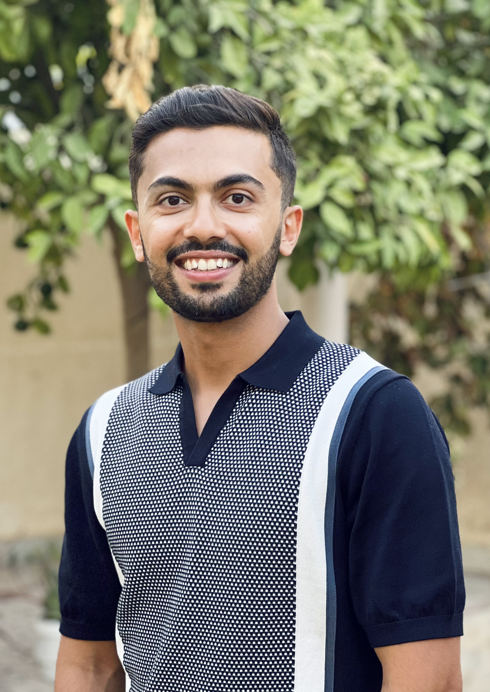

omar.montasser@yale.edu
Google Scholar
DBLP
Kline Tower, Room 1051.
I am an Assistant Professor at Yale, in the Department of Statistics and Data Science. My research broadly explores theory and foundations of machine learning, with a particular interest in addressing modern challenges such as robustness to adversarial examples and distribution shifts.
Prior to Yale, I spent one year at UC Berkeley as a FODSI-Simons postdoctoral researcher. I received my PhD from the Toyota Technological Institute at Chicago, where I was fortunate to be advised by Nathan Srebro. During my PhD, I primarily thought about questions related to learning machine learning models robust against adversarial examples, through the lens of learning theory. For a broad overview, you can watch my PhD thesis defense, and/or read my PhD thesis for an in-depth exploration.
Before TTIC, I completed a five-year program (combined BS/MS) in computer science and engineering at Penn State.
While there, I enjoyed working with Daniel Kifer and Sean Hallgren
on problems in machine learning and quantum computational complexity.
Agnostic Multi-Robust Learning Using ERM.
Saba Ahmadi, Avrim Blum, Omar Montasser, and Kevin Stangl
AISTATS, 2024.
Strategic Classification under Unknown Personalized Manipulation.
Han Shao, Avrim Blum, and Omar Montasser
NeurIPS, 2023.
Adversarially Robust Learning: A Generic Minimax Optimal Learner & Characterization
Omar Montasser, Steve Hanneke, and Nathan Srebro
NeurIPS, 2022. (Oral)
Boosting Barely Robust Learners: A New Perspective on Adversarial Robustness
Avrim Blum, Omar Montasser, Greg Shakhnarovich, Hongyang Zhang
NeurIPS, 2022.
A Theory of PAC Learnability under Transformation Invariances
Han Shao, Omar Montasser, and Avrim Blum
NeurIPS, 2022. (Oral)
Transductive Robust Learning Guarantees
Omar Montasser, Steve Hanneke, and Nathan Srebro
AISTATS, 2022.
Adversarially Robust Learning with Unknown Perturbation Sets
Omar Montasser, Steve Hanneke, and Nathan Srebro
COLT, 2021.
Beyond Perturbations: Learning Guarantees with Arbitrary Adversarial Test Examples
Shafi Goldwasser, Adam Tauman Kalai, Yael Tauman Kalai, and Omar Montasser
NeurIPS, 2020. (Spotlight)
Reducing Adversarially Robust Learning to Non-Robust PAC Learning
Omar Montasser, Steve Hanneke, and Nathan Srebro
NeurIPS, 2020.
Efficiently Learning Adversarially Robust Halfspaces with Noise
Omar Montasser, Subhi Goel, Ilias Diakonikolas, and Nathan Srebro
ICML, 2020.
Approximate is Good Enough: Probabilistic Variants of Dimensional and Margin Complexity
Pritish Kamath, Omar Montasser, and Nathan Srebro
COLT, 2020.
VC Classes are Adversarially Robustly Learnable, but Only Improperly
Omar Montasser, Steve Hanneke, and Nathan Srebro
COLT, 2019. Best Student Paper Award!
Predicting Demographics of High-Resolution Geographies with Geotagged Tweets
Omar Montasser and Daniel Kifer
AAAI, 2017. (Oral)
Based on minimal theme by orderedlist.